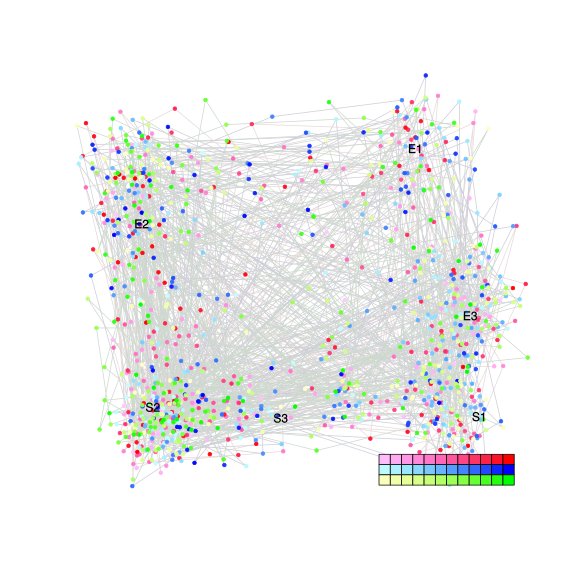
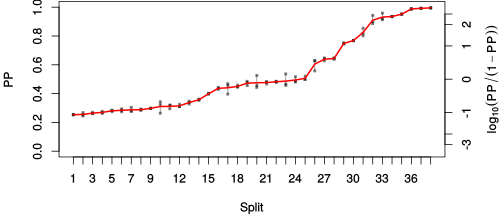
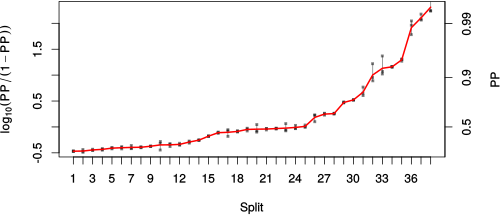

| chain # | burnin | subsample | Iterations (remaining) | command line | subdirectory | directory |
|---|---|---|---|---|---|---|
| 1 | 10000 | 1 | 90000 | /usr/local/bali-phy-3.0-beta2/bin/bali-phy E6_AA_red3_selAll_all4Manatees.fas -s 56437 -n E6_red3_selAll_all4Manatees_c1 | E6_red3_selAll_all4Manatees_c1-1 | /home/willemse/data/trees/BaliPhy |
| 2 | 10000 | 1 | 90000 | /usr/local/bali-phy-3.0-beta2/bin/bali-phy E6_AA_red3_selAll_all4Manatees.fas -s 89374 -n E6_red3_selAll_all4Manatees_c2 | E6_red3_selAll_all4Manatees_c2-1 | /home/willemse/data/trees/BaliPhy |
| 3 | 10000 | 1 | 90000 | /usr/local/bali-phy-3.0-beta2/bin/bali-phy E6_AA_red3_selAll_all4Manatees.fas -s 28243 -n E6_red3_selAll_all4Manatees_c3 | E6_red3_selAll_all4Manatees_c3-1 | /home/willemse/data/trees/BaliPhy |
| P(data|M) = -10960.151 +- 0.387 | Complete sample: 269944 topologies | 95% Bayesian credible interval: 256444 topologies |
Phylogeny Distribution

| Partition support: Summary |
| Partition support graph: SVG |
{kind=link}
| 50% consensus | Newick (+PP) | SVG | |||||
| 66% consensus | Newick (+PP) | SVG | |||||
| 80% consensus | Newick (+PP) | SVG | |||||
| 90% consensus | Newick (+PP) | SVG | |||||
| 95% consensus | Newick (+PP) | SVG | |||||
| 99% consensus | Newick (+PP) | SVG | |||||
| 100% consensus | Newick (+PP) | SVG | |||||
| MAP | Newick (+PP) | SVG | |||||
| greedy | Newick (+PP) | SVG |
{kind=link}
{kind=link}
{kind=link}
{kind=link}
{kind=link}
{kind=link}
{kind=link}
{kind=link}
Alignment Distribution
Partition 1
| Diff | Min. %identity | # Sites | Constant | Informative | ||||
|---|---|---|---|---|---|---|---|---|
| Initial | FASTA | HTML | Diff | 0.578% | 274 | 1 (0.365%) | 185 (67.5%) | |
| Best (WPD) | FASTA | HTML | AU | 3.35% | 681 | 5 (0.734%) | 194 (28.5%) |
Mixing
{kind=link}
{kind=link}
| burnin (scalar) | ESS (scalar) | ESS (partition) | ASDSF | MSDSF | PSRF-CI80% | PSRF-RCF |
|---|---|---|---|---|---|---|
| 1636 | 849 | 338.236 | 0.011 | 0.045 | 1.001 | 1.011 |
Projection of RF distances for the first 3 chains3D | Variation of split PPs across chains |
Scalar variables
| Statistic | Median | 95% BCI | ACT | ESS | burnin | PSRF-CI80% | PSRF-RCF |
|---|---|---|---|---|---|---|---|
| prior | -522.7 | (-586.8, -463) | 97.79 | 2761 | 1057 | 1.001 | 1.001 |
| prior_A1 | -661 | (-723.9, -606.2) | 87.22 | 3095 | 988 | 1.001 | 0.9974 |
| likelihood | -1.093e+04 | (-1.096e+04, -1.089e+04) | 83.51 | 3233 | 691 | 1 | 1 |
| logp | -1.145e+04 | (-1.15e+04, -1.14e+04) | 47.96 | 5629 | 1057 | 1.001 | 0.9971 |
| Heat.beta | 1 | ||||||
| Scale1 | 22.2 | (16.63, 28.67) | 1.09 | 247793 | 82 | 1 | 1 |
| S1.F.pi.A | 0.05787 | (0.04969, 0.06646) | 9.249 | 29193 | 125 | 0.9998 | 0.9953 |
| S1.F.pi.R | 0.07139 | (0.06165, 0.08158) | 12.23 | 22077 | 349 | 0.9999 | 0.9996 |
| S1.F.pi.N | 0.03139 | (0.02549, 0.03781) | 14.47 | 18662 | 484 | 1.001 | 1.006 |
| S1.F.pi.D | 0.05061 | (0.04276, 0.05908) | 9.729 | 27753 | 106 | 0.9996 | 0.9965 |
| S1.F.pi.C | 0.05911 | (0.04893, 0.06983) | 8.302 | 32521 | 515 | 0.9999 | 0.9962 |
| S1.F.pi.Q | 0.03458 | (0.02883, 0.04048) | 8.732 | 30922 | 704 | 0.9998 | 1.006 |
| S1.F.pi.E | 0.05669 | (0.0482, 0.06545) | 9.31 | 29002 | 519 | 1 | 0.9948 |
| S1.F.pi.G | 0.06879 | (0.05759, 0.08056) | 11.43 | 23632 | 356 | 0.9997 | 0.9963 |
| S1.F.pi.H | 0.026 | (0.02069, 0.03192) | 8.255 | 32706 | 547 | 0.9999 | 1 |
| S1.F.pi.I | 0.04926 | (0.04173, 0.05698) | 9.16 | 29477 | 443 | 1 | 1.003 |
| S1.F.pi.L | 0.1088 | (0.09577, 0.1221) | 9.043 | 29856 | 219 | 1.001 | 1.004 |
| S1.F.pi.K | 0.04787 | (0.04078, 0.05526) | 8.508 | 31736 | 581 | 1 | 1.003 |
| S1.F.pi.M | 0.008704 | (0.005898, 0.0119) | 8.004 | 33733 | 394 | 0.9995 | 1.003 |
| S1.F.pi.F | 0.05199 | (0.04342, 0.06081) | 9.141 | 29536 | 377 | 0.9998 | 0.9984 |
| S1.F.pi.P | 0.04042 | (0.03237, 0.04917) | 11.8 | 22879 | 492 | 0.9996 | 1.006 |
| S1.F.pi.S | 0.05488 | (0.04729, 0.06278) | 8.822 | 30604 | 479 | 1 | 0.9964 |
| S1.F.pi.T | 0.05385 | (0.04602, 0.06209) | 8.466 | 31893 | 339 | 1 | 0.996 |
| S1.F.pi.W | 0.01894 | (0.0137, 0.0248) | 8.862 | 30468 | 416 | 1 | 0.9999 |
| S1.F.pi.Y | 0.05228 | (0.04391, 0.06089) | 9.015 | 29949 | 349 | 0.9998 | 0.9959 |
| S1.F.pi.V | 0.05447 | (0.04631, 0.06273) | 9.658 | 27956 | 259 | 1 | 1.01 |
| I1.RS07.meanIndelLengthMinus1 | 9.174 | (6.761, 11.98) | 27.86 | 9689 | 133 | 1 | 1 |
| I1.RS07.logLambda | -4.558 | (-4.844, -4.279) | 15.41 | 17518 | 224 | 1 | 1 |
| |A1| | 619 | (572, 671) | 318 | 849 | 911 | 0.9846 | 1.011 |
| #indels1 | 74 | (66, 82) | 81.55 | 3310 | 841 | 0.9091 | 0.9973 |
| |indels1| | 693 | (604, 788) | 190.4 | 1417 | 416 | 0.9919 | 1.006 |
| #substs1 | 2154 | (2107, 2194) | 297.6 | 907 | 1636 | 0.9767 | 1.01 |
| Scale1*|T| | 29.3 | (27.57, 31.17) | 32.62 | 8278 | 143 | 1 | 0.9972 |
| |A| | 619 | (572, 671) | 318 | 849 | 911 | 0.9846 | 1.011 |
| #indels | 74 | (66, 82) | 81.55 | 3310 | 841 | 0.9091 | 0.9973 |
| |indels| | 693 | (604, 788) | 190.4 | 1417 | 416 | 0.9919 | 1.006 |
| #substs | 2154 | (2107, 2194) | 297.6 | 907 | 1636 | 0.9767 | 1.01 |
| |T| | 1.32 | (0.9939, 1.695) | 1 | 270003 | 153 | 1 | 0.9991 |